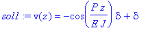
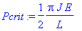

Piedritto Incastrato al Piede e Libero in Sommità
G.Piluso - Febbraio 2004
Si assume il segno positivo per:
1 - gli spostamenti verso il basso;
2 - le forze concentrate verso il basso;
3 - il caricodistribuito verso il basso;
4 - i momenti concentrati antiorari.
5 - Forze Concentrate = F*Dirac(z-valore ascissa)
6 - Coppie Concentrate = M*Dirac(1, z-valore ascissa)
7 - Carichi Distribuiti Parziali = q*Heaviside(z-valore ascissa)
8 - Carichi Distribuiti = q
Inizializzazione
>
restart;
Equazioni della Linea Elastica
>
alpha:=P/(E*J):
ode:=diff(v(z),z$2)=-(alpha^2)*(v(z)-delta):
Condizioni al Contorno
>
ic:={v(0)=0, D(v)(0)=0}:
Risoluzione dell'Equazione Differenziale
>
sol1:=dsolve({ode} union ic,{v(z)});

Ricava la funzione v(z)
>
eval(v(z),sol1):
v:=unapply(%,z):
Ricava il "P critico" in funzione della luce "L" e la luce libera di inflessione "Lo"
>
Pcrit:=solve(v(L)=delta,P);
Lo:=denom(%);
